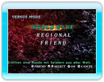
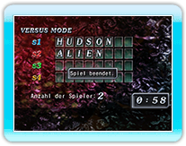
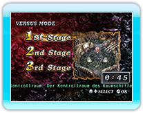
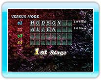
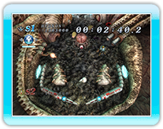
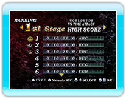

14 |
VERSUS MODE |
 |
|
In diesem Modus, kannst du gegen entfernte Spieler mittels der Nintendo Wi-Fi Connection spielen. Wähle einfach diesen Modus, um dich mit der Nintendo Wi-Fi Connection zu verbinden.

● WORLD WIDE
● REGIONAL
● FRIEND

Sobald du die Art der Gruppe ausgewählt hast, öffnest du das Spiel für Teilnehmer.
Wenn niemand teilnimmt, wird das Spiel beendet und die Verbindung unterbrochen. Während du auf andere Spieler wartest, kannst du in den Modusauswahl durch Drücken
Sobald es ausreichend Spieler gibt, bestimmen diese die Regeln und
das Level (Mehrheitsabstimmung).
* Bei einem Unentschieden, werden die Regeln für das Spiel per Zufall entschieden. * Du kannst keine Endgegner Level wählen.
Das Spiel startet, wenn das Level gewählt wurde. Bei Abschluss des Spiels, sieht der Spieler seinen derzeitigen Rang.
Dies ist für dieses Spiel lautet ZEIT-ANGRIFFS-MODUS. Spiele bis einer der Spieler eine bestimmte Anzahl an Punkten erreicht (10 Millionen).

Der Ergebnisbildschirm zeigt die 30 besten Punktzahlen an. Wenn du mit einem anderen Spieler mittels Nintendo WFC spielst und eine hohe Punktzahl erzielst, kann diese in der Nintendo
Wi-Fi Connection-Rangliste registriert werden. Wenn deine Punktzahl registriert wurde, kannst du sowohl deine, als auch die Position der 30 in deiner Nähe platzierten betrachten. |
 |
 |
 |